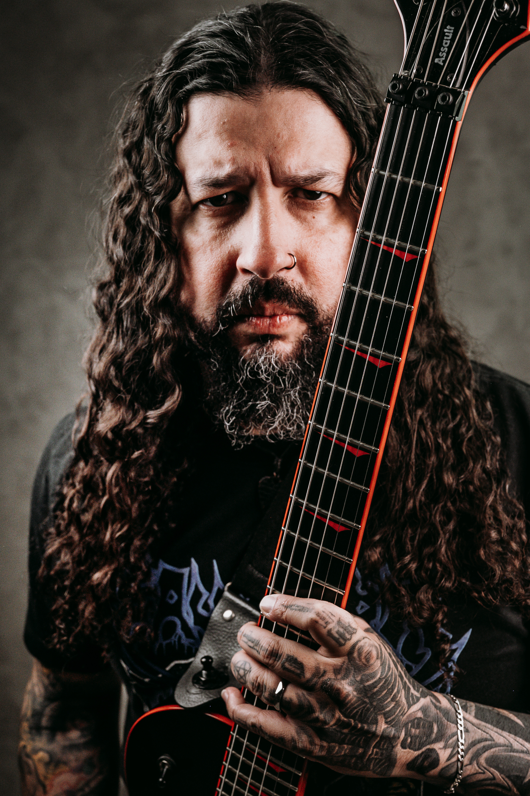
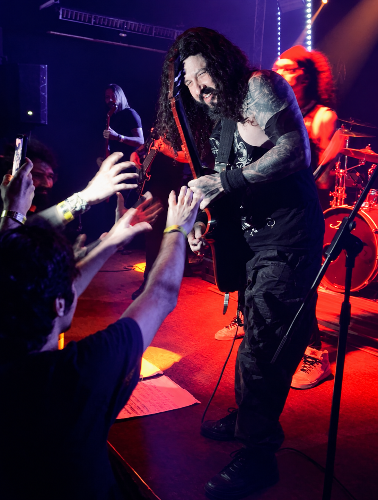
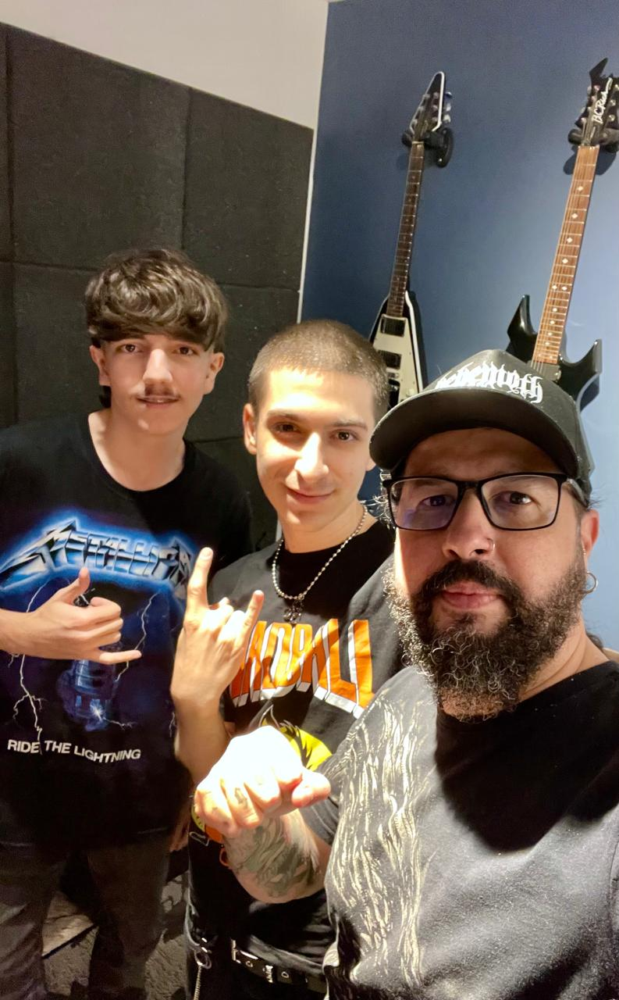

Várias bandas de rock
Trajetória em bandas nacionais e internacionais, com centenas de horas de palco, gravações de estúdio, turnês e festivais.
Aulas particulares com Moyz Henrique: anos de estrada, bandas de metal extremo e vivência de palco levados direto para a sua evolução.

Guitarrista profissional, compositor e integrante da banda Necropsy Room.
Um currículo construído nos palcos do rock underground e em anos dedicados ao ensino musical de alto nível.
Trajetória em bandas nacionais e internacionais, com centenas de horas de palco, gravações de estúdio, turnês e festivais.
Hoje na linha de frente da banda Necropsy Room, produzindo e tocando música autoral pesada, técnica e visceral.
Foco no que importa: repertório, técnica limpa, improvisação, timbre e timing. Do zero ao solo complexo, no seu ritmo.
Licenciatura em Música pelo Instituto Federal de Goiás, Câmpus Goiânia, concluída em 2024. Formação pedagógica de nível superior somada à vivência de palco: didática de verdade, aplicada ao instrumento.
Seja para tocar seus riffs favoritos de rock e metal, criar linhas de baixo ou dominar o violão acústico, o método se adapta ao seu objetivo, com rigor técnico e didática moderna.
Palhetada, bends, escalas, harmonia aplicada e timbres.
Groove, fingerstyle, slap, construção de linhas e peso rítmico.
Ritmos populares, dedilhados, acompanhamento de voz e repertório variado.
Confira o trabalho atual na banda Necropsy Room e a música autoral mais recente.
Clipes oficiais, apresentações ao vivo, ensaios e toda a técnica da banda, direto no canal do YouTube.
A faixa que expressa a identidade musical, os timbres e as composições de Moyz Henrique.
Um pouco da energia das aulas práticas e dos shows ao vivo pelo Brasil.

Foco na técnica e na prática
Aulas
Necropsy Room no palco
Ao vivo
Pequeno grande guitarrista
Kids
Groove desde a primeira aula
Baixo
Parceria dentro e fora da aula
Rock
Os primeiros solos saindo
Solo
Clássicos do metal no repertório
Metal
Nunca é tarde para começar
Todas as idades
Linhas de baixo com peso
Baixo
Paz, amor e muito rock
Kids
Aulas em conjunto
Evolução.jpeg)
Mais um riff dominado
Conquista
Sorriso de quem evoluiu
Resultado
Do zero ao palco
Guitarra
Equipamentos profissionais
SetupConsulte os horários disponíveis para aulas presenciais ou online.
Falar no WhatsApp